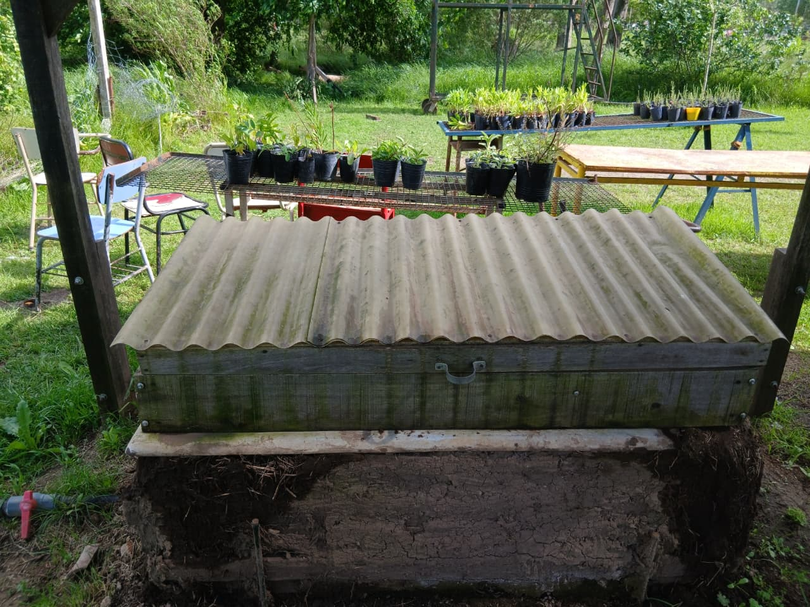
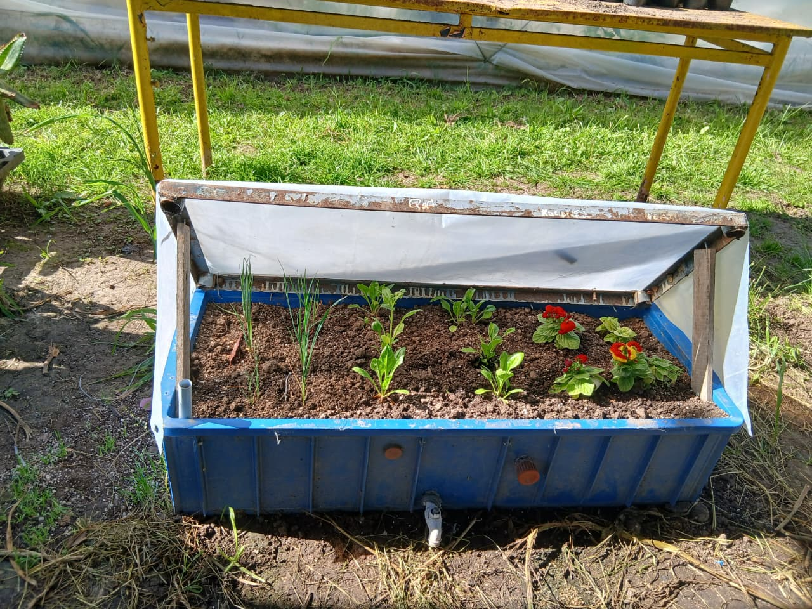

Wicking bed
¡Una forma de cultivar plantas de manera eficiente sin necesidad de regar tu jardin con frecuencia!
Descripción
Somos alumnos de 7° año, de la escuela E.E.S.A N°1 de Hurlingham. Nuestro objetivo es dar a conocer nuestras wicking beds, hechas por nosotros mismos con materiales reciclados para que vos también te animes a hacer la tuya. Es una solución viable para aumentar la eficiencia del agua en el jardín aprovechando el método de riego por capilaridad. Si te interesa, ¡También te contamos cómo hacerlo!
ver másNustras Wicking bed

Wicking Bed fija
- Presupuesto
- $112.000
- Materiales
- $70.000
- Mano de obra
- $42.000
Nuestra Wicking Bed fija cumple la funcion de estaquera, apta para cultivos ornamentales, aromaticas y horticolas ya que la profundidad y dimensiones permiten un mayor volumen de sustrato.
A comparación de la Wicking Bed suterranea no es necesario contar con un jardin.
Apta para patios sin suelo y con capacidad de recibir sufiente luz solar.
Ver más
Wicking Bed transportable
- Presupuesto
- $49.000
- Materiales
- $32.500
- Mano de obra
- $19.500
Nuestra Wicking Bed transportable cumple la función de estaquera, aunque también es apta para el cultivo de plantas ornamentales y especies aromáticas. Debido a su escasa profundidad y a sus dimensiones reducidas en comparación con las Wicking Beds fijas y subterráneas, se caracteriza por su facilidad de traslado. Esto permite ubicarla en distintos sectores, según las necesidades del establecimiento.
Ver más
Wicking Bed subterranea
- Presupuesto
- $168.000
- Materiales
- $105.000
- Mano de obra
- $63.000
Nuestra Wicking Bed subterranea, a diferencia de la wicking bed fija y de hogar, se realiza bajo tierra para aprovechar el acondicionamiento del suelo, sin necesidad de utilizar un mecanismo de acondicionamiento térmico.
Ver másUso
Independientemente del tipo de wicking bed que elijas, su uso es muy simple.
Cada una cuenta con un tubo de carga que permite que el agua ingrese y se distribuya a través del caño corrugado. Este tubo debe llenarse con una regadera hasta alcanzar su capacidad máxima.
En el caso de las wicking beds fijas y de hogar, se abre la canilla para cargar el sistema. Cuando el agua llega al nivel máximo, el goteo de la canilla indica que el depósito está lleno.
Por otro lado, en la wicking bed subterránea, al estar instalada directamente en el suelo, no es posible colocar una canilla para indicar el nivel del agua. Por lo tanto, se debe observar el nivel del agua durante la carga para identificar cuándo alcanza su capacidad máxima.